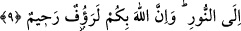

nefye yöneliktir.
Peygamber, birçok deliller ve mucizeler göstererek uyardığı ve îmâna çağırdığı halde
îmân etmeyişinizin hangi özrü olabilir? Delilsiz dâvet fayda vermez. Bu sebeple delil
getirmeden yalnız dâvet edenin dâvetine uymayan kimse azarlanmayı ve ayıplanmayı
hak etmiş olmaz. O, sizi inanmanız için îmâna çağırıyor.
“Halbuki O, sizden kesin söz de almıştır.” Mîsâk kelimesi yemin ve verilen sözle
pekiştirilen bir akiddir, bir sözleşmedir. Mevsık mîsaktan alınmış isimdir. Peygamber
sizi îmâna dâvet etmeden önce Allah sizden îman edeceğinize dâir söz almıştı.” Bu söz
alma olayı imân etmeyi gerektiren delilleri ortaya koymak ve düşünüp araştırmaya
imkân vermek sûretiyle olmuştur. Bazı âlimler ise bu söz almanın, Allah Teâlâ insanları
Hz. Âdem’in (a.s.) sulbünden çok küçük karınca gibi zerreler şeklinde çıkarıp “Ben
sizin Rabbiniz değil miyim?” dediği zaman gerçekleştiği görüşünü uygun bulmuşlardır.
“Eğer inanırsanız.” Hangi gerekçe ile inanırsanız inanın, bunun ötesinde bir gerekçe
yoktur. Aynü’l-Me‘ânî’de, “Eğer verdiğiniz sözü tasdik ediyorsanız” Fethü’r-
rahmân’da ise “Şâyet başladığınız hal üzerinde devam ediyorsanız” şeklinde
kaydedilmiştir.
9. Sizi karanlıklardan aydınlığa çıkarmak için kuluna apaçık âyetler indiren
O’dur. Şüphesiz Allah, size karşı çok şefkatli, çok merhametlidir.
“Kuluna” yâni Hz. Muhammed (s.a.)’e “apaçık âyetleri” yâni emir ve nehiylere,
haram ve helallere âid apaçık hükümleri “indiren O’dur.” Bunu Allah “sizi” yâni
Muhammed’in kavmi olan sizleri “karanlıklardan aydınlığa” yâni küfür, şirk, şekk,
cehâlet, muhâlefet ve hicab karanlıklarından îman, tevhîd, yakîn, ilim, muvâfak ve
tecellî aydınlığına “çıkarmak için indirmiştir.”
“Şübhesiz Allah, size karşı çok şefkatli, çok merhametlidir.” Çünkü size Peygamber
göndermek ve akla dayalı delilleri ortaya koyduktan sonra âyetler indirmek sûretiyle
sizi dünya ve âhiret mutluluğuna ulaştırmak istemektedir. Kâşifî şöyle demiştir:
“Kur’ân’ı gönderdiği için merhamet ve şefkatlidir, peygamberleri dâvetle
görevlendirdiği için ihsân sâhibidir.”
Bazı âlimler, vahiy nûruyla feyizlendirmesi sebebiyle raûf/çok şefkatli, beşerî nefsin
karanlığını gidermesi sebebiyle de rahîm/çok merhametli olduğunu söylemişlerdir.